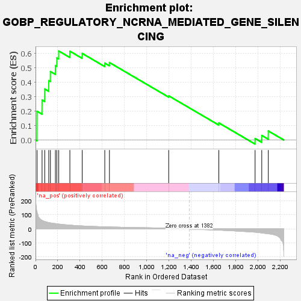
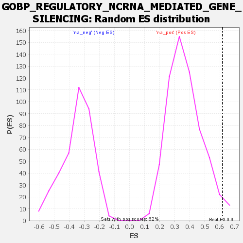

| Dataset | rank |
| Phenotype | NoPhenotypeAvailable |
| Upregulated in class | na_pos |
| GeneSet | GOBP_REGULATORY_NCRNA_MEDIATED_GENE_SILENCING |
| Enrichment Score (ES) | 0.61767644 |
| Normalized Enrichment Score (NES) | 1.6769485 |
| Nominal p-value | 0.022617124 |
| FDR q-value | 0.40843913 |
| FWER p-Value | 0.999 |

| SYMBOL | RANK IN GENE LIST | RANK METRIC SCORE | RUNNING ES | CORE ENRICHMENT | |
|---|---|---|---|---|---|
| 1 | ZSWIM8 | 14 | 125.548 | 0.1992 | Yes |
| 2 | TNRC6A | 59 | 59.997 | 0.2776 | Yes |
| 3 | SMAD2 | 83 | 52.997 | 0.3540 | Yes |
| 4 | CNOT3 | 119 | 45.152 | 0.4121 | Yes |
| 5 | EIF4E2 | 134 | 42.461 | 0.4753 | Yes |
| 6 | TARBP2 | 179 | 37.438 | 0.5167 | Yes |
| 7 | AGO4 | 192 | 35.544 | 0.5695 | Yes |
| 8 | TNRC6C | 209 | 33.830 | 0.6177 | Yes |
| 9 | LIMD1 | 309 | 26.528 | 0.6164 | No |
| 10 | TGFB1 | 420 | 20.842 | 0.6010 | No |
| 11 | CNOT6 | 623 | 14.658 | 0.5338 | No |
| 12 | HELZ2 | 665 | 13.569 | 0.5376 | No |
| 13 | LIN28A | 1198 | 5.466 | 0.3065 | No |
| 14 | MIR25 | 1649 | -9.116 | 0.1185 | No |
| 15 | DICER1 | 1975 | -23.678 | 0.0107 | No |
| 16 | EZH2 | 2035 | -29.101 | 0.0317 | No |
| 17 | CELF1 | 2094 | -34.928 | 0.0627 | No |
